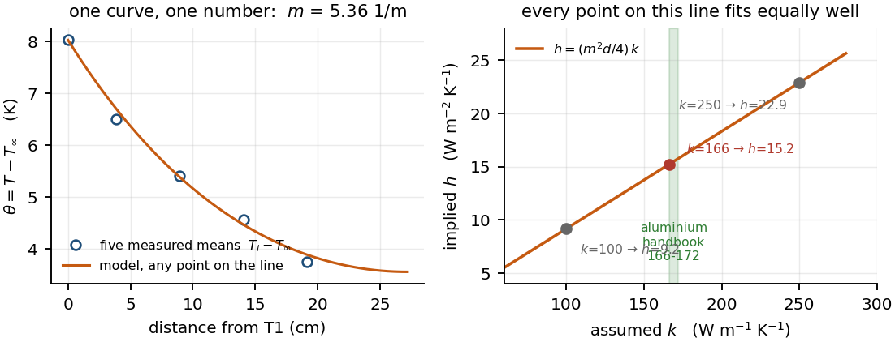
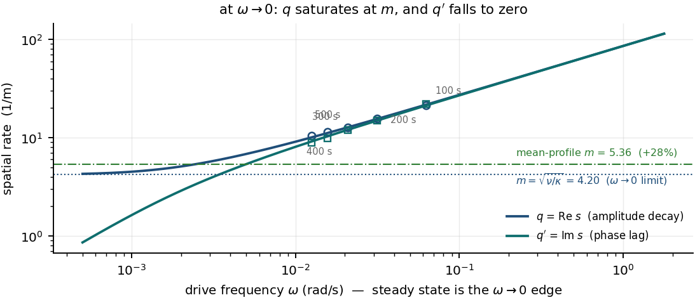
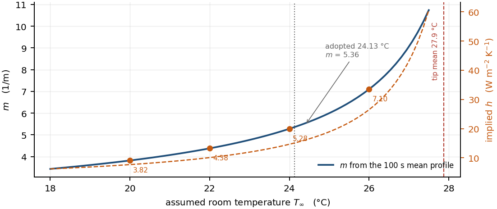

Phys 39 / 169 · Module 8 · F1 口试 · Q10 配套
Q10 的公式推导
为什么"令 ∂θ/∂t = 0 直接量 k"这条路走不通：m → 两个未知数 k、h → 只能得比值 h/k 必须知道 T∞ ，而它没测
使用者：Ricky Huang（团队 R-X）∞ ，每步给单位
0. 一页速览：这条推导线一共四步
这份文档只回答一个问题：既然稳态最省事，为什么不能直接量 k？ 答案不是"精度不够"，而是方程数不够 ——而且第二个理由（T∞ ）独立地再打击一次。
# 做什么 得到什么 几个数 1 把切片方程 ρcA ∂θ/∂t = kA θ″ − hPθ 的时间项划掉 θ″ = m²θ ，m² = hP/(kA) 1 个：m 2 把 P/A = 4/d 代进去 h = (m²d/4)·k ⇒ 只给比值 h/k 2 个未知：k, h 3 看它在频率轴上是什么位置 稳态 = ω→0 的极限 ：q′→0 、q→m ⇒ 相位信息消失观测量从 2 降到 1 4 再检查另一个未知量 θ = T − T∞ ：T∞ 没测 ⇒ m 本身也被污染 误差再叠一层
一句话答案。
稳态令 ∂θ/∂t = 0，等于把"时间"这个自变量删掉 ；时间没了，ω 也没了——而 ω 正是周期法用来把两个未知数分开的那条已知方程。于是只剩 m² = hP/(kA) 一个数，凡是满足 h = (m²d/4)k 的 (k, h) 组合都给出同一条曲线、同一个残差 ，拟合算法无法区分。所以稳态给的是比值 h/k，不是 k。
记号先说清。 本文 θ 一律表示 θ = T − T∞ （超出环境的温度）。这个定义本身就是第 6 节那个麻烦的根源：拟合时你必须先替 T∞ 填一个数。
1. 起点：和 κ、ν 推导同一条方程
不预设任何结论，只对一个厚 dx 的切片记能量账（推导见《为什么除以 ρc》§2）：
ρcA ∂θ/∂t = kA ∂²θ/∂x² − hP θ (★)
三项都是 W/m （每米棒长的功率）：
项 表达式 单位检查 储热 ρcA ∂θ/∂t (J m⁻³K⁻¹)(m²)(K/s) = J m⁻¹s⁻¹ = W/m ✓ 轴向净流入 kA ∂²θ/∂x² (W m⁻¹K⁻¹)(m²)(K m⁻²) = W/m ✓ 侧向漏热 hP θ (W m⁻²K⁻¹)(m)(K) = W/m ✓
周期法从这里继续往下走：除以 ρcA → 得 κ 和 ν → 设 θ ∝ eiωt → 得 s² = (ν + iω)/κ → 得 κ = ω/(2qq′) 。本文走另一条岔路：直接令时间项为零 。
2. 稳态极限：时间项一划，只剩一个数
令 ∂θ/∂t = 0 （稳态 = 每个点都不再随时间变），(★) 马上退化成一个只含空间的方程：
kA θ″ = hP θ ⟹ θ″ = (hP / kA) θ ≡ m² θ
顺手核对 m² 的单位（这是最容易写错的地方）：
hP/(kA) = (W m⁻²K⁻¹ · m) / (W m⁻¹K⁻¹ · m²)
= (W m⁻¹K⁻¹) / (W m K⁻¹)
= m⁻² ⇒ m 的单位是 1/m ✓
解的形状（基座 θ(0)=θ₀ 、端部绝热 θ′(L)=0 ；为什么必须用 cosh 见 Q7）：
θ(x) = θ₀ · cosh[m(L − x)] / cosh(mL) （半无限近似则为 θ₀ e−mx ）
这条曲线只有两个可调常数：θ₀ （基座温度）和 m （衰减快慢）。θ₀ 基本由第一个点钉住，所以五个测点最终只贡献一个有意义的信息：m 。
你的数：
m = 5.3565 1/m （100 s 平均剖面拟合，T∞ = 24.13 °C）
mL = 1.454 （无量纲棒长 ⇒ 端部还有 44%，必须用 cosh）
1/m = 18.7 cm （平均场的衰减长度，比棒长 27.15 cm 短不了多少）

图 1 左：把五个平均温度减去 T∞ 得到 θ，它们落在一条 cosh 上，这条曲线只由一个数 m = 5.36 决定。右：同一个 m 只锁定了 (k, h) 平面上的一条直线 h = (m²d/4)k ——直线上任何一点 都给出与左图完全相同的曲线和相同的残差。材料手册把 k 限在 166–172 之后，h 才被"挤"到 15.0–15.6。注意：这不是精度问题，是方程数问题；点再多也挤不出第二条约束。
3. 一个方程、两个未知数：简并
把几何代进去（P/A = πd/(πd²/4) = 4/d ）：
m² = hP/(kA) = 4h/(kd) ⟹ h = (m²d/4)·k ⟺ h/k = m²d/4
你的数：m²d/4 = 28.69 × 0.01277/4 = 0.09160 。于是
假设 k 推出 h 这说明什么 100 W m⁻¹K⁻¹ 9.2 数学上完全成立，物理上铝没这么低 166 W m⁻¹K⁻¹ 15.2 接近手册值，但这只是"因为你假定了 k" 250 W m⁻¹K⁻¹ 22.9 数学上也完全成立
3.1 为什么"残差最小"救不了它
拟合在最小化 Σ(θᵢᵃᵗᵃ − θᵢᵐᵒᵈᵉˡ)² ，而模型只通过 m 依赖 k 与 h。也就是说雅可比矩阵沿方向
(δk, δh) ∝ (1, m²d/4) = (1, 0.0916)
恒为零 ：把 k 和 h 按这个比例同时改，模型曲线一个字都不变，残差不变。这叫零空间（null space） 或简并 。任何优化器、任何初值、任何正则化，都无法沿这个方向给出答案——除非外面再补一条信息。
几何直觉（最好用的一句话）： 稳态只让你看到"轴向导热"和"侧向漏热"这两支的平衡点 ——就像一条直线，你只知道它的斜率 ，不知道它整体的尺度 。k 是"每米温差推动多少热流"，h 是"每 K 温差每 m² 带走多少功率"；把两者同时放大，热流分配一模一样，温度剖面当然一模一样。
外面补的那条信息只能是"k 或 h 之一另外知道 "：查手册（k = 166–172，±2%）、或者独立标定 h。前者可行但等于把手册值当输入 ，后者我们没做。所以稳态路线的诚实说法是："给出 h/k，并用中心 k 换算出一个 h" ，不是"测出 k"。
4. 更本质的看法：稳态就是 ω → 0 的极限
上面说"少一个方程"，听起来像记账。换一个角度就能看出它是物理 ：把周期解的两条方程写出来，然后让频率归零。
s = q + iq′ ， s² = (ν + iω)/κ ， 分离实部虚部：
q² − q′² = ν/κ 2qq′ = ω/κ
第二条说明 q′ 是"含 ω"的量：q′ = ω/(2κq) 。于是
ω → 0 ⟹ q′ → 0 ， q → √(ν/κ) = m
所以 m 不是新东西——它就是"零频率的 q"。
频率一消失，虚部（相位）跟着消失，你的两个观测量（振幅衰减、相位滞后）塌缩成一个。这才是"少一个数"的根本原因 ：不是探头不够、不是点不够、也不是算法不好，而是在 ω = 0 处，相位这块信息物理上不存在 。
反过来也解释了 Ångström 法为什么成立：要让相位说话，就必须让场在动。 ω 越大，q′ 越大，相位携带的独立信息越强——这也是为什么"为什么要用正弦而不是阶跃"（Q12）的答案。
4.1 用你自己的五个周期，把这条曲线画出来
周期 ω (rad/s) q (1/m) q′ (1/m) √(q² − q′²) 100 s 0.0628 21.258 21.889 不可用 （负数）200 s 0.0314 15.653 15.061 4.26 300 s 0.0209 12.747 12.036 4.20 400 s 0.0157 11.417 9.835 5.80 500 s 0.0126 10.515 8.846 5.68 ω → 0 0 m 0 m
最后一列的两种算法给出 4.20 与 5.36 ，两者差 28%——这就是那个老问题："同一个 m，从平均场读是 5.36，从周期场外推是 4.20。"（Q13 讲的就是它。）

图 2 把两条曲线的理论解画满整个频率轴（用的是五周期 κ = 6.80×10⁻⁵、ν = 1.20×10⁻³）：q （蓝）在低频端饱和到 m = 4.20，q′ （青）一路掉向零。空心点是你们五个周期的实测值——它们全在"两者都还很大"的区间里，离 ω→0 还有一两个量级。这就是"稳态是这条曲线的端点"的图形版本：越往左走，能用的观测量越少，走到最左只剩一个数。
5. 周期法到底多了什么
把两条路线并排放在一张表里，缺什么一眼就看见：
稳态 周期 未知数 k、h（两个） κ、ν（两个） 已知的"自变量" 无 ω ——我们自己设的驱动频率每点观测量 1 个（平均温度） 2 个（振幅 B、相位 φ） 方程数 1（m² = hP/kA ） 2（实部 + 虚部） 结果 只能给比值 h/k κ、ν 各自可解 是否需要 T∞ 需要 （而且很敏感）不需要
多出来的那个方程，全部来自"ω 是已知的 "这一件事：
观测：每点两个数 B_i、φ_i → 空间拟合 → q、q′
代数：κ = ω / (2 q q′) ← ω 在分子上，是"输入"
ν = κ (q² − q′²) ← 两条方程的差
反推：k = κ ρc , h = ν ρc (d/4)
稳态相当于把 ω 设成 0 代进第一行：κ = 0/(2·q·0) ——退化成 0/0，什么也解不出来。这就是"不能只做稳态"的数学版本。
还有一个常被忽略的好处：多频自检。 周期法里 ω 是自由参数，每换一个周期就是一次独立的实验条件 ，于是能问"κ 在五个频率上一致吗"（答案：跨度 4.9%，最大一对差 1.43σ）。稳态只有一个条件，做十次也只能重复同一个数——没有内部一致性可查 。
6. 第二个、独立的理由：稳态必须知道 T∞
上面说"只能得比值"，这是结构性问题 。还有一层是数值问题 ：稳态路线必须先把 T∞ 填进去，而它没测。这层更致命，因为它连"把 k 当已知、只求 h"这条路也一起毁掉。
6.1 机理：θ 越小的点，被 T∞ 误差伤得越重
θ = T − T∞ 。若真实室温比你填的数高 δ，等价于每个 θ 都被平移 −δ。但 m 是由 θ 的相对 衰减率决定的，所以要看 δ/θ ：
T1 T2 T3 T4 T5 θ (K) 8.02 6.49 5.40 4.56 3.75 1/θ (K⁻¹) 0.125 0.154 0.185 0.219 0.267 δ=1 K 时的相对扰动 12% 15% 19% 22% 27%
扰动随 x 增大 ——端部被削掉的比例远大于基座。这在图形上看起来就是"衰减得更快" ，于是拟合只能靠调大 m 来补偿。所以 T∞ 猜高 ⇒ θ 被削 ⇒ m 偏大 ⇒ h 偏大（h ∝ m²）。
6.2 定量：一个解析式 + 一条实测曲线
用两点指数估计 m = (1/xₙ)[ln θ₀ − ln θₙ] 对 T∞ 求导：
∂m/∂T∞ = (1/xₙ) · (1/θₙ − 1/θ₀) = (1/0.1915)(0.267 − 0.125) = 0.74 m⁻¹ 每 K
换成相对量：室温错 1 K ⇒ m 偏 14% ⇒ h 偏 28% （因为 h ∝ m²）。而我们的 T∞ 是从"开跑前 TEC 的第一读数"取的（m08_initial_tec_room_references.json ，24.13 °C），不是独立空气温度计 ；长时间跑动下室温漂 1–2 K 完全可能。
实际重做 1 参数 cosh 拟合（固定 T∞ ，拟合 θ₀ 和 m，同 analysis 的模型）：
假定的 T∞ 拟合出的 m (1/m) 反推 h (k=164.5) 相对 24 °C 18 °C 3.43 6.2 −58% 20 °C 3.82 7.7 −47% 22 °C 4.38 10.1 −31% 24 °C 5.28 14.6 — 26 °C 7.10 26.5 +82% 27 °C 9.06 43.1 +196%
（h 一列用 k = 164.5 W m⁻¹K⁻¹，即周期法给的中心值；若用手册 167，各数再高 1.5%。）

图 3 只改变"你假定的室温"，重新拟合 100 s 的五个平均值：m 从 3.4 涨到 9.1，h 从 6 涨到 43 ，两个量级的变化只来自一个从未测过的常数。红色虚线是端部的平均温度 27.9 °C——一旦假定的 T∞ 逼近它，θ₅ → 0、1/θ₅ 发散，拟合彻底失控。这就是"没有独立室温计"在稳态路线里的真实代价。
6.3 周期法为什么完全免疫
因为 B 和 φ 是"相对均值"的量。把整条曲线加一个常数 Δ：
T(t) = a + B cos(ωt + φ)
↓ a → a + Δ （等价于 T∞ 猜错 Δ）
T(t) = (a + Δ) + B cos(ωt + φ) ← B 与 φ 一个字都没变
最小二乘里的常数项（设计矩阵的第一列）把这个平移全部吸收 ，振幅和相位两列不受影响。所以 κ = ω/(2qq′) 里既没有 T∞ 、也没有 h、也没有 A/P——这是周期法最值钱的性质。
7. 两条路线的数值对照（同一根棒）
把两条链子并排走一遍，每一步都写清"用了哪个输入"：
步 稳态路线 周期路线 1 五个平均温度 → 拟合 m = 5.3565 1/m（需 T∞ = 24.13 °C） 五条曲线 → 拟合 q = 15.653、q′ = 15.061 1/m 2 h/k = m²d/4 = 0.09160 κ = ω/(2qq′) = 6.80×10⁻⁵ m²/s3 两个未知数，到此为止 k = κρc = 164.5 W m⁻¹K⁻¹4 借 k = 164.5 ⇒ h = 15.1 W m⁻²K⁻¹ ν = κ(q²−q′²) = 1.20×10⁻³ 1/s ⇒ h = 9.3
注意第 4 步的分岔：同一个 h，15.1 和 9.3，差 63%。 这不是谁算错了，而是三条效应叠在一起：
① 放大：h ∝ m² ⇒ m 差 25% 变成 h 差 56%
② 来源：稳态的 m 依赖 T∞（第 6 节：1 K → 14%）；周期的 h 不依赖 T∞
③ 条件数：周期的 h ∝ (q² − q′²)，两个大数相减
Ω = (q² + q′²)/(q² − q′²) = 5.8 – 25.9
⇒ 周期法自己的 h 也在 9.3 – 18.2 之间飘
所以诚实 的说法是：
稳态（借 k）给 h = 15.1；周期给 h = 9.3–18.2。15.1 落在这个区间里，但没有独立信息能判断谁更准。 而这个宽度（2 倍）本身主要由 q² − q′² 的条件数决定（Ω 最大到 26）。这就是为什么本实验只报"h 的量级 "，而把 k 报到 ±5%。
反过来说，如果哪天装了独立室温计，稳态这条路的 h 会从"量级"变成"可分辨"——这是最值得补的一个实验（2 小时即可）。
8. 交叉检查：两条路线本应互相钉住
两条路线之间有一个恒等式 ，是最便宜的体检：
m² = ν/κ = q² − q′²
m 的两个来源 数值 (1/m) 结论 平均场 cosh 拟合 4.56 – 5.97 依赖 T∞ ，端部信息在 cosh 里 周期场 √(q² − q′²) 4.20 – 5.80 不依赖 T∞ ，但吃条件数 两边差 5 – 35% （比任何一条路线自己的误差棒都大）
差 5–35% 说明"端部模型 + 室温"这块系统误差还没吃完（Q7 的 εT 最大 26%、第 6 节的 0.74 m⁻¹/K 都在这个量级）。但它至少是同一个量级、同一个方向，所以"物理图像正确、数值未致密"是站得住的结论。
而 100 s 那一组在这条检查上直接失效： q = 21.258 但 q′ = 21.889 ⇒ q² − q′² < 0 ⇒ m² 为负，物理上不可能。这跟 ν = κ(q² − q′²) < 0 （"负的漏热"）是同一件事——所以 100 s 只能当诊断，不能进最终值。
9. 那稳态还剩什么用？（第三条理由：它自己也稳不住）
"不能单独用"不等于"没用"。稳态提供的是周期法结构上拿不到 的东西：
稳态给什么 周期给什么 m（含端部信息 ，cosh 才拟合得动） q、q′（免 T∞ ） 唯一能检验端部边界条件 的路线 检验线性、单频、扫描时序 与 √(q² − q′²) 的交叉检查 多频一致性（5 个独立 ω） 给 h/k 的比值（免去假设 A/P） 给 κ、ν 的绝对值
一句话：稳态给"形状"，周期给"动力学"。 两者互补；缺了任何一个，另一个都无法自证。
9.1 但"做稳态"本身有个隐形成本：它必须真的稳
周期法的判据是"周期内相位/幅值重复"，天然可以平均；稳态的判据只能是"斜率 < x °C/min"，而热量扩散的时间常数是几百秒——等到它真稳，要等很久 。Module 7 的实测记录（docs/module_notes/module_07_stationary_fin.md ）：
40 °C 保温 31 min = 3.1 τ（τ = 591–739 s）
仍差预注册判据 |dT/dt| ≤ 0.02 °C/min 的 2.6 倍
再达标需 ln 2.6 = 0.96 τ ≈ 9 min；连漂移限 3.4× 一起满足需 ≈ 12 min 更多
窗口滑动（window_slide）是最大项：
最后 900 s 里 m 仍以 ≈1% / 100 s 下降（4.860 → 4.804 1/m）
⇒ 单报一个 m，会继承"几十个百分点"的散布，而这不是 误差棒，是漂移
9.2 而且"自由拟合 T∞ "这条路已经被证明是死的
有人会问："那就把 T∞ 也当未知数一起拟合不就行了？" Module 7 试过，结果正好说明这是病态 ：
同一份稳态记录，自由拟合 T∞ 的结果：
T∞ = 26.98 °C ← 比探头自己的静置读数高 3 °C
m = 6.29 1/m ← 比固定 T∞ 时高 30%
⇒ 拟合把自由度花在"补偿漂移"上，而不是求 m
Module 7 独立的敏感性分析（mL ≈ 1.3 的记录）：
环境温度 +1 °C ⇒ m 变化 +7.6%
本节对 100 s 记录的解析估计：0.74 1/m 每 K ≈ +14%
（同一方向、同一量级；差别来自该记录端部 θ₅ 更小）
所以完整的答案是三条，不是一条： 结构 ：只有一个方程、两个未知数 ⇒ 只能得 h/k（第 3 节）；物理 ：稳态是 ω→0，相位观测量在极限处消失（第 4 节）；数值 ：必须假定 T∞ ，而 m 对它有 8–14%/K 的敏感度，同时"稳"本身要等几十个 τ（第 6、9 节）。
10. 口试版
10.1 三十秒版（被问"为什么不直接做稳态"）
稳态令 ∂θ/∂t = 0，等于把时间这个自变量删掉；时间没了、ω 也没了，而 ω 正是周期法用来分开两个未知数的那条已知量。剩下 m² = hP/(kA) 一个数，h = (m²d/4)k ：凡是满足这个比值的 (k, h) 组合曲线完全重合、残差完全一样，所以只能给 h/k ，拿不到 k。换频率看更清楚：ω→0 时 q′→0、q→m，相位这个观测量在极限处消失了。
10.2 六十秒版（再加数字与 T∞ ）
接上面。第二个独立理由是它必须知道 T∞ 。我的 θ 从基座 8.0 K 衰到端部 3.75 K，所以室温错 1 K，端部的相对扰动是 27%、基座只有 12%——曲线看起来就像"衰减更快"，m 被抬高 0.74 1/m（14%）。而 h ∝ m² ，所以 h 偏 28%。实测把 T∞ 从 18 改到 26 °C，反推的 h 从 6 变到 26。周期法的 B 和 φ 对整体平移免疫，κ = ω/(2qq′) 里连 h 和 T∞ 都不出现。
10.3 英文口语卡（可直接照念）
Q10-1 A steady state sets the time derivative to zero, and that removes the
drive frequency, which is exactly the known quantity the periodic
method uses to separate the two unknowns.
Q10-2 What is left is one number, m^2 = hP/(kA). Substituting P/A = 4/d
gives h = (m^2 d/4) k, so the fit only fixes the ratio h/k. Every
pair on that line produces the same profile and the same residual.
Q10-3 Equivalently, steady state is the omega -> 0 limit: q' goes to zero
and q goes to m, so the phase observable disappears.
Q10-4 The second reason is the room temperature. My excess temperature
falls from 8.0 K to 3.75 K, so a 1 K error in T_inf perturbs the tip
by 27 per cent and inflates m by 0.74 per metre, which is 28 per cent
in h because h scales as m squared.
Q10-5 The periodic route is immune: adding a constant to the trace changes
only the mean, not the amplitude or the phase.
追问预案 "装个温度计不就完了？" ——对，这是最该补的实验（2 小时）。补上之后稳态的 h 会从"量级"变成"可分辨"，但它仍然只给 h/k 这个结构 问题：k 还是得从手册来。"那你的 h 到底多少？" ——只报量级 9.3–18.2 W m⁻²K⁻¹。因为 h ∝ (q² − q′²)，条件数 Ω = 5.8–25.9，相当于把两个大数相减。"100 s 那组为什么不能用？" ——q′ = 21.89 > q = 21.26 ⇒ q² − q′² < 0 ⇒ ν 变负、"负的漏热"，物理上不可能。"那你还做稳态干什么？" ——只有它能检验端部边界条件（cosh 形状）、并给 √(q² − q′²) 一个独立对照（现在差 5–35%）。
四个常见错误写法 少一个方程 ，不是精度问题；∞ 当未知数自由拟合——Module 7 试过：T∞ 跑到 26.98 °C、m 高 30%，那是病态 不是解法；
附录 A. 一页速查
A.1 四个公式
关系 单位 一句话含义 m² = hP/(kA) = 4h/(kd) m⁻² 稳态唯一能测到的组合：两个通道的比值 h = (m²d/4) k ⟺ h/k = m²d/4 — 简并直线：一个 m 只锁一条线 m = √(ν/κ) = limω→0 q m⁻¹ 稳态 = 零频率的 q；此时 q′ = 0 ∂m/∂T∞ ≈ (1/xₙ)(1/θₙ − 1/θ₀) m⁻¹K⁻¹ θ 越小的点越怕室温错（≈0.74 每 K）
A.2 你的数字（背这七个就够）
量 值 备注 m（100 s 平均剖面） 5.3565 1/m mL = 1.454，1/m = 18.7 cm h/k = m²d/4 0.09160 d = 12.77 mm √(ν/κ)（周期法） 4.20 1/m 比 5.36 低 28% ∂m/∂T∞ 0.74 K⁻¹ ⇒ h 偏 28% 每 K T∞ 敏感性（18→26 °C） h: 6.2→26.5 k = 164.5 固定 两条路线的 h 15.1 vs 9.3–18.2 稳态（借 k） vs 周期 条件数 Ω = (q²+q′²)/(q²−q′²) 5.8–25.9 h 的误差被放大 6–26 倍
A.3 三条自检（讲完前默念）
方程数对了吗？ 稳态 1 个方程、2 个未知数 ⇒ 只能给比值；周期 2 个方程（实部+虚部）⇒ 各自可解。ω 在哪？ κ = ω/(2qq′) 里 ω 在分子；稳态 ω = 0 ⇒ 退化。这句话能一句话讲清"为什么必须让场动起来"。误差方向对吗？ T∞ 猜高 ⇒ θ 被削 ⇒ m 偏大 ⇒ h 偏大（h ∝ m²）；Δh/h ≈ 2Δm/m。
数值来源：Module_8/data/processed/five_period_review/ （五周期 q、q′、κ、ν）、transport_note/m08_transport_parameters.json （平均剖面 m 与室温参考）、m08_initial_tec_room_references.json （T∞ 取法）、docs/module_notes/module_07_stationary_fin.md （31 min 保温、T∞ 自由拟合、+7.6%/K）。图 1–3 由 Module_8/python/q10_figures.py 生成；图 3 的曲线用同一份模型对 100 s 五个平均值重做 1 参数 cosh 拟合（固定 T∞ ，拟合 θ₀ 与 m），给出 3.82 / 4.38 / 5.28 / 7.10，与口试册 Q10 的表一致。